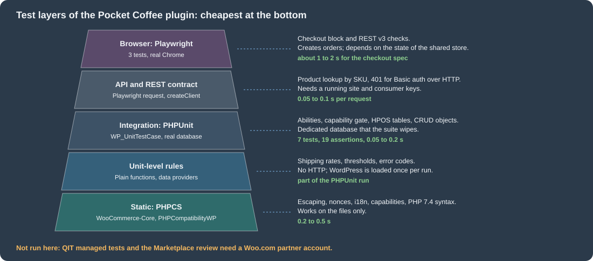
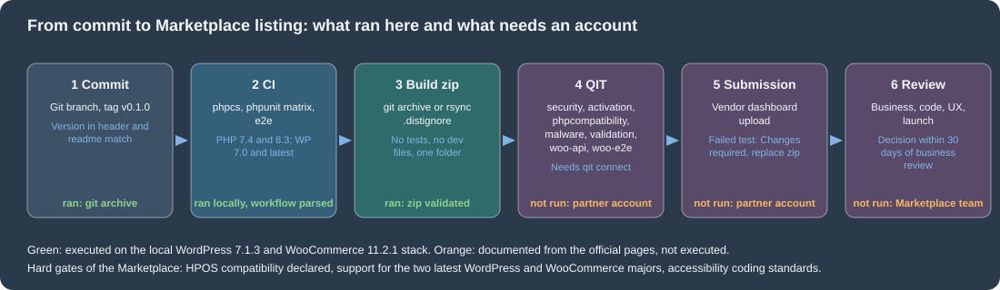

Testing, Deployment and Marketplace
|
This content was generated with the assistance of AI and should be verified against the official documentation before being relied on in production. |
This page was written against WordPress 7.1.3 and WooCommerce 11.2.1 (PHP 8.3.36 and MariaDB 11.8 in the local stack), with PHPUnit 9.6.38 and
Yoast PHPUnit Polyfills 2.0.5, PHP_CodeSniffer 3.13.6 with woocommerce-sniffs 2.0.0, WordPress Coding Standards 3.4.1 and PHPCompatibilityWP 2.1.8, Playwright 1.64.1,
@woocommerce/e2e-utils-playwright 0.5.1, @wordpress/env 12.0.0 and the QIT command line tool (woocommerce/qit-cli) 1.3.2. It was checked on 2026-10-27. The testing
tools are the same for every WooCommerce store; the Marketplace parts apply only to extensions and themes that are sold or listed on the Woo Marketplace, and the QIT account
features need a Woo.com partner account. The page follows the pages on extension development and on
HPOS, whose plugin skeleton and compatibility declaration it assumes, and it is followed by AI and MCP. The pages on
performance and security cover what to check before a release goes live. For the general PHP and browser tooling see the pages on
testing with PHPUnit and Pest,
static analysis and refactoring and
running browser tests in CI/CD.
The running example is Pocket Coffee. The plugin pocket-coffee-testing holds the shop’s shipping rule (flat 4.90 EUR in Spain, free from 40 EUR, flat 9.90 EUR in the rest of the
European Union, at most 5 kg per parcel) as a function and as a public REST route, and the tests also create an order for two Pocket Grinders to prove that orders land in the
HPOS tables. The page runs every tool against that plugin and against the local Pocket Coffee store, and it quotes what the tools printed. What could not be run (the QIT test runs,
the Marketplace submission and review, a real wp-env environment, GitHub Actions) is listed in What was run and what was not.
The test layers
A WooCommerce extension runs inside WordPress, so almost every useful test needs WordPress loaded. The layers differ in how much of the platform they start, and therefore in cost.
| Layer | What it checks | Tool | Needs |
|---|---|---|---|
Static |
Coding standard, escaping, nonces, capabilities, i18n, syntax of the minimum PHP version. |
PHP_CodeSniffer with |
The source files only. |
Unit and integration |
Functions, classes, hooks, REST routes, CRUD objects and database tables against a real WordPress and WooCommerce. |
PHPUnit with the WordPress test library ( |
A dedicated test database that the suite wipes, and the WordPress test library. |
API |
REST API v3, Store API and plugin routes from the point of view of a client. |
Playwright |
A running site and credentials. |
End to end |
Cart, checkout, My Account and the admin screens in a real browser. |
Playwright and |
A running site, a browser, |
Marketplace gate |
Security, activation, PHP compatibility, malware, validation, API and end to end tests against a clean WooCommerce. |
QIT managed tests. |
A Woo.com partner account and the QIT command line tool. |
Source: WooCommerce docs: Testing
The figure orders the layers of the example plugin by cost, with the times that were measured on the local store. The rule that it encodes is to push every check as low as it can go: a shipping rate is a unit-level test, a REST route needs WordPress, and only a shopper journey belongs in a browser.

The plugin under test
The plugin is small on purpose. Its header declares the supported WordPress, PHP and WooCommerce versions (the L-1 policy that the Marketplace also uses), depends on WooCommerce with
Requires Plugins, and declares compatibility with HPOS and with the Cart and Checkout blocks, as described on the extension development page.
<?php
/**
* Plugin Name: Pocket Coffee Testing
* Description: Shipping quote for Pocket Coffee, with a REST route, as a small plugin to test.
* Version: 0.1.0
* Requires at least: 7.0
* Requires PHP: 7.4
* Requires Plugins: woocommerce
* WC requires at least: 11.1
* WC tested up to: 11.2
* Author: Pocket Coffee
* License: GPL-2.0-or-later
* Text Domain: pocket-coffee-testing
*
* @package PocketCoffeeTesting
*/
defined( 'ABSPATH' ) || exit;
use Automattic\WooCommerce\Utilities\FeaturesUtil;
add_action(
'before_woocommerce_init',
static function () {
if ( class_exists( FeaturesUtil::class ) ) {
FeaturesUtil::declare_compatibility( 'custom_order_tables', __FILE__, true );
FeaturesUtil::declare_compatibility( 'cart_checkout_blocks', __FILE__, true );
}
}
);
/**
* Shipping quote: Spain 4.90 EUR (free from 40 EUR), rest of the EU 9.90 EUR, 5 kg per parcel.
*
* @param string $country ISO 3166-1 alpha-2 code.
* @param float $subtotal Order subtotal in EUR.
* @param float $weight_kg Parcel weight.
* @return array|WP_Error Zone, rate and currency, or an error.
*/
function pctest_shipping_quote( string $country, float $subtotal, float $weight_kg ) {
$country = strtoupper( $country );
if ( $weight_kg <= 0.0 || $weight_kg > 5.0 ) {
return new WP_Error( 'pctest_bad_weight', __( 'A parcel weighs between 0 and 5 kg.', 'pocket-coffee-testing' ), array( 'status' => 422 ) );
}
if ( 'ES' === $country ) {
$zone = 'Spain';
$rate = $subtotal >= 40.0 ? 0.0 : 4.90;
} elseif ( in_array( $country, WC()->countries->get_european_union_countries(), true ) ) {
$zone = 'European Union';
$rate = 9.90;
} else {
return new WP_Error( 'pctest_no_zone', __( 'Pocket Coffee does not ship there.', 'pocket-coffee-testing' ), array( 'status' => 422 ) );
}
return array(
'zone' => $zone,
'rate' => $rate,
'currency' => get_woocommerce_currency(),
);
}
/**
* Register GET /wp-json/pocket-coffee/v1/quote.
*/
function pctest_register_routes() {
register_rest_route(
'pocket-coffee/v1',
'/quote',
array(
'methods' => WP_REST_Server::READABLE,
'permission_callback' => '__return_true', // A public price quote: no private data.
'callback' => static function ( WP_REST_Request $request ) {
$quote = pctest_shipping_quote(
$request['country'],
(float) $request['subtotal'],
(float) $request['weight_kg']
);
return is_wp_error( $quote ) ? $quote : rest_ensure_response( $quote );
},
'args' => array(
'country' => array(
'required' => true,
'type' => 'string',
'pattern' => '^[A-Za-z]{2}$',
'validate_callback' => 'rest_validate_request_arg',
),
'subtotal' => array(
'required' => true,
'type' => 'number',
'minimum' => 0,
),
'weight_kg' => array(
'required' => true,
'type' => 'number',
),
),
)
);
}
add_action( 'rest_api_init', 'pctest_register_routes' );The header keys that matter for testing and for the Marketplace are Requires at least and Requires PHP (WordPress and PHP), Requires Plugins (WordPress 6.5 and later refuses to activate the plugin
until WooCommerce is active), and the two WooCommerce keys WC requires at least and WC tested up to. The last one is what the "tested with" notice in the Plugins screen reads, so it
has to be bumped when the test matrix moves. The plugin was installed on the local store from the zip built later on this page, activated, and called:
$ curl -s "http://localhost:8081/wp-json/pocket-coffee/v1/quote?country=ES&subtotal=45&weight_kg=1"
{"zone":"Spain","rate":0,"currency":"EUR"}
$ curl -s "http://localhost:8081/wp-json/pocket-coffee/v1/quote?country=Spain&subtotal=45&weight_kg=1"
{"code":"rest_invalid_param","message":"Invalid parameter(s): country","data":{"status":400,"params":{"country":"country does not match pattern ^[A-Za-z]{2}$."}, ... }}
$ curl -s "http://localhost:8081/wp-json/pocket-coffee/v1/quote?country=ES&subtotal=45&weight_kg=9"
{"code":"pctest_bad_weight","message":"A parcel weighs between 0 and 5 kg.","data":{"status":422}}
On the same store wp wc hpos compatibility-info listed "Pocket Coffee Testing" among the compatible plugins, which is the check that the compatibility declaration reached WooCommerce.
Coding standards and static analysis
The first and cheapest check is PHP_CodeSniffer. WooCommerce publishes the woocommerce/woocommerce-sniffs ruleset (standards WooCommerce, WooCommerce-Core, WooCommerce-Core-Tests), which builds on the
WordPress Coding Standards (WordPress, WordPress-Core, WordPress-Docs, WordPress-Extra) and PHPCompatibilityWP. The security sniffs are the ones that matter: output escaping, nonce verification, input
sanitisation and capability names. The Marketplace code review and the QIT security test look for the same classes of problems, so a clean local run removes the most common reasons for a failed submission.
{
"name": "pocket-coffee/pocket-coffee-testing",
"description": "Pocket Coffee shipping quote, used to show how to test a WooCommerce plugin.",
"type": "wordpress-plugin",
"license": "GPL-2.0-or-later",
"require-dev": {
"phpunit/phpunit": "^9.6",
"yoast/phpunit-polyfills": "^2.0",
"woocommerce/woocommerce-sniffs": "^2.0",
"wp-coding-standards/wpcs": "^3.4",
"phpcompatibility/phpcompatibility-wp": "^2.1"
},
"config": {
"allow-plugins": {
"dealerdirect/phpcodesniffer-composer-installer": true
}
},
"scripts": {
"lint": "phpcs",
"test": "phpunit"
}
}Source: GitHub: woocommerce-sniffs
The ruleset file is phpcs.xml.dist at the plugin root. It lists the files to check, the minimum PHP version for the PHPCompatibilityWP sniffs (7.4- is the value of Requires PHP), the
standard, the text domain of the i18n sniff and the custom capabilities. The last property is needed because WooCommerce adds capabilities such as manage_woocommerce that WordPress itself does not
know, and the sniff warns about unknown capabilities.
<?xml version="1.0"?>
<ruleset name="Pocket Coffee Testing">
<description>Coding standard for the Pocket Coffee Testing plugin.</description>
<file>.</file>
<exclude-pattern>*/vendor/*</exclude-pattern>
<exclude-pattern>*/node_modules/*</exclude-pattern>
<exclude-pattern>*/tests/*</exclude-pattern>
<arg name="extensions" value="php"/>
<arg name="colors"/>
<arg value="sp"/>
<!-- Minimum supported PHP, as declared in the plugin header. -->
<config name="testVersion" value="7.4-"/>
<rule ref="PHPCompatibilityWP"/>
<rule ref="WooCommerce-Core"/>
<!-- Add this rule when the plugin checks a capability that WooCommerce registers. -->
<rule ref="WordPress.WP.Capabilities">
<properties>
<property name="custom_capabilities" type="array">
<element value="manage_woocommerce"/>
</property>
</properties>
</rule>
<rule ref="WordPress.WP.I18n">
<properties>
<property name="text_domain" type="array">
<element value="pocket-coffee-testing"/>
</property>
</properties>
</rule>
</ruleset>On the local store the ruleset (without the capability rule, which this plugin does not need) printed nothing for pocket-coffee-testing, exit code 0. A deliberately bad function showed that the
standard is really active: it produced 10 errors and 2 warnings, among them these (the line numbers are those of the bad file):
FOUND 10 ERRORS AND 2 WARNINGS AFFECTING 6 LINES 1 | ERROR | Missing file doc comment 3 | WARNING | Processing form data without nonce verification. 3 | ERROR | Detected usage of a non-sanitized input variable: $_GET['country'] 4 | ERROR | All output should be run through an escaping function (see the | | Security sections in the WordPress Developer Handbooks), found '$country'. 5 | WARNING | Found unknown capability "manage_woocommerce" in function call to current_user_can().
PHPStan is the other static tool. The QIT runs it as a managed test (run:phpstan, with the level chosen by --phpstan_level) and it needs the WordPress and WooCommerce function stubs to know the
platform functions; the stubs are published on Packagist as php-stubs/wordpress-stubs and php-stubs/woocommerce-stubs. PHPStan was not run for this page.
Source: QIT docs: PHPStan managed test
PHPUnit with the WordPress test library
WooCommerce itself, and every plugin that follows its example, tests with PHPUnit on top of the WordPress test library from the wordpress-develop repository. The library provides the
WP_UnitTestCase base class, which wraps each test in a database transaction and rolls it back, resets the global state, and offers factories (self::factory()->user, ->post, …). Because WordPress is loaded
for real, there are no mocks of WordPress functions: the plugin code runs against the real hooks, options, REST server and, with WooCommerce activated in the bootstrap, against the real WooCommerce classes
and tables. The WordPress test suite and the deployment of a WordPress site in general are covered in
Testing and Deployment and CI/CD.
Scaffolding the test files
WP-CLI generates the boilerplate. wp scaffold plugin-tests <plugin> creates the bootstrap, the PHPUnit configuration, a sample test, a PHPCS ruleset, the install script
for the test library and (with --ci=github) a workflow:
$ wp scaffold plugin-tests pocket-coffee-testing --dir=/tmp/scaff --ci=github Success: Created test files. $ find /tmp/scaff -type f | sort ./.github/workflows/testing.yml ./.phpcs.xml.dist ./bin/install-wp-tests.sh ./phpunit.xml.dist ./tests/bootstrap.php ./tests/test-sample.php
bin/install-wp-tests.sh <db-name> <db-user> <db-password> [db-host] [wp-version] [skip-database-creation] downloads WordPress and the test library into the temporary directory and writes
wp-tests-config.php. The generated workflow of WP-CLI pins old action and polyfill versions (actions/checkout@v4, polyfills 1.1), and its bootstrap loads only the plugin, so for a WooCommerce extension
both have to be changed, as the next sections do.
The test database
The configuration names a database that the suite owns. The library drops and recreates the WordPress tables with the prefix wptests_ at the start of a run, so it must never point at the shop’s
database. On the local stack a separate database pc_phpunit was created on the MariaDB container, and the configuration was written by hand (the install script does the same job
on a developer machine or in CI):
<?php
// Test-only configuration: a dedicated database that the suite is allowed to wipe.
define( 'ABSPATH', '/var/www/html/' );
define( 'WP_DEBUG', true );
define( 'DB_NAME', getenv( 'WP_TESTS_DB_NAME' ) ?: 'pc_phpunit' );
define( 'DB_USER', getenv( 'WP_TESTS_DB_USER' ) ?: 'wpuser' );
define( 'DB_PASSWORD', getenv( 'WP_TESTS_DB_PASSWORD' ) ?: '' );
define( 'DB_HOST', getenv( 'WP_TESTS_DB_HOST' ) ?: 'ec-wordpress-db' );
define( 'DB_CHARSET', 'utf8' );
define( 'DB_COLLATE', '' );
$table_prefix = 'wptests_';
define( 'WP_TESTS_DOMAIN', 'example.org' );
define( 'WP_TESTS_EMAIL', 'admin@example.org' );
define( 'WP_TESTS_TITLE', 'Test Blog' );
define( 'WP_PHP_BINARY', 'php' );
define( 'WPLANG', '' );The bootstrap
The bootstrap loads the test library functions, registers what to load (WooCommerce first, then the plugin, in the muplugins_loaded hook, which runs before the theme and before init), creates the
WooCommerce tables once, and then starts WordPress through the library bootstrap. Two WooCommerce-specific details are visible. WooCommerce does not create its tables on a plain require, so the
bootstrap calls WC_Install::install() in setup_theme; and HPOS is not enabled by a scripted install, so the bootstrap switches it on with the option woocommerce_custom_orders_table_enabled, which makes
the tests exercise the same order storage as a new store. The Yoast PHPUnit Polyfills path must be defined before the library loads; the library refuses to start without the polyfills.
<?php
/**
* PHPUnit bootstrap for the Pocket Coffee Testing plugin.
*/
$tests_dir = getenv( 'WP_TESTS_DIR' ) ?: '/tools/wpdev/tests/phpunit';
// The Yoast polyfills must be reachable before the WordPress test library loads.
define( 'WP_TESTS_PHPUNIT_POLYFILLS_PATH', dirname( __DIR__ ) . '/vendor/yoast/phpunit-polyfills' );
// Use a project-local configuration when there is one; bin/install-wp-tests.sh writes its own into the library.
if ( file_exists( __DIR__ . '/wp-tests-config.php' ) ) {
define( 'WP_TESTS_CONFIG_FILE_PATH', __DIR__ . '/wp-tests-config.php' );
}
require_once $tests_dir . '/includes/functions.php';
tests_add_filter(
'muplugins_loaded',
static function () {
require WP_PLUGIN_DIR . '/woocommerce/woocommerce.php';
require dirname( __DIR__ ) . '/pocket-coffee-testing.php';
}
);
// Create the WooCommerce tables once, before the first test runs.
tests_add_filter(
'setup_theme',
static function () {
define( 'WP_UNINSTALLING', false );
WC_Install::install();
update_option( 'woocommerce_custom_orders_table_enabled', 'yes' );
// Re-create capabilities and roles that WooCommerce adds on install.
$GLOBALS['wp_roles'] = new WP_Roles();
}
);
require $tests_dir . '/includes/bootstrap.php';The PHPUnit configuration only names the bootstrap and the directory of tests. backupGlobals stays false because the library manages the globals itself.
<?xml version="1.0"?>
<phpunit
bootstrap="tests/bootstrap.php"
backupGlobals="false"
colors="false"
convertErrorsToExceptions="true"
convertNoticesToExceptions="true"
convertWarningsToExceptions="true"
>
<testsuites>
<testsuite name="pocket-coffee-testing">
<directory suffix="Test.php">./tests/</directory>
</testsuite>
</testsuites>
</phpunit>Source: PHPUnit: Documentation
The tests
The test class covers the three things a WooCommerce plugin usually does: pure logic, a REST route and the order tables. Notes on what it does and why:
-
The data provider runs the same assertions for the Spain, free-threshold and Germany cases. Lower-case
esproves that the country code is normalised. -
set_up()(the polyfill name that works on every PHPUnit version) sets the currency to EUR. A fresh test database has the WooCommerce defaults, which are United States and USD, not the shop settings; the first run of the test without this method failed withFailed asserting that two strings are identical. -'EUR' +'USD'. -
rest_do_request()dispatches aWP_REST_Requestthrough the real REST server without HTTP, so argument validation and the permission callback run exactly as in production. The test checks 200 for a good request, 400 for an invalid country (the schemapattern) and 422 for an overweight parcel (theWP_Errorstatus). -
The order test creates a simple product and an order through the CRUD objects, never through posts, and then reads the row from the
wc_orderstable. If HPOS were off the table would still exist, so the test first assertsOrderUtil::custom_orders_table_usage_is_enabled()andOrderUtil::get_table_for_orders().WP_UnitTestCaserolls the transaction back, so the order disappears after the test.
<?php
/**
* Tests for the Pocket Coffee shipping quote, its REST route and HPOS order storage.
*
* @package PocketCoffeeTesting
*/
use Automattic\WooCommerce\Utilities\OrderUtil;
/**
* @covers ::pctest_shipping_quote
* @covers ::pctest_register_routes
*/
class ShippingQuoteTest extends WP_UnitTestCase {
/**
* A fresh test database starts with WooCommerce defaults (United States, USD), not with the shop settings.
*/
public function set_up(): void {
parent::set_up();
update_option( 'woocommerce_currency', 'EUR' );
}
/**
* @dataProvider quote_provider
*/
public function test_quote( string $country, float $subtotal, float $weight, string $zone, float $rate ): void {
$quote = pctest_shipping_quote( $country, $subtotal, $weight );
$this->assertSame( $zone, $quote['zone'] );
$this->assertEqualsWithDelta( $rate, $quote['rate'], 0.001 );
$this->assertSame( 'EUR', $quote['currency'] );
}
public function quote_provider(): array {
return array(
'Spain below threshold' => array( 'ES', 35.0, 1.0, 'Spain', 4.90 ),
'Spain at free threshold' => array( 'es', 40.0, 1.0, 'Spain', 0.0 ),
'Germany' => array( 'DE', 20.0, 2.0, 'European Union', 9.90 ),
);
}
public function test_overweight_parcel_is_an_error(): void {
$quote = pctest_shipping_quote( 'FR', 10.0, 6.0 );
$this->assertWPError( $quote );
$this->assertSame( 'pctest_bad_weight', $quote->get_error_code() );
}
public function test_rest_route_returns_the_quote(): void {
$request = new WP_REST_Request( 'GET', '/pocket-coffee/v1/quote' );
$request->set_query_params(
array(
'country' => 'DE',
'subtotal' => 20,
'weight_kg' => 1,
)
);
$response = rest_do_request( $request );
$this->assertSame( 200, $response->get_status() );
$this->assertSame( 'European Union', $response->get_data()['zone'] );
}
public function test_rest_route_rejects_a_bad_country_and_an_overweight_parcel(): void {
$bad_country = new WP_REST_Request( 'GET', '/pocket-coffee/v1/quote' );
$bad_country->set_query_params(
array(
'country' => 'Spain',
'subtotal' => 20,
'weight_kg' => 1,
)
);
$this->assertSame( 400, rest_do_request( $bad_country )->get_status() );
$heavy = new WP_REST_Request( 'GET', '/pocket-coffee/v1/quote' );
$heavy->set_query_params(
array(
'country' => 'ES',
'subtotal' => 20,
'weight_kg' => 9,
)
);
$this->assertSame( 422, rest_do_request( $heavy )->get_status() );
}
public function test_order_is_stored_in_the_hpos_tables(): void {
global $wpdb;
$product = new WC_Product_Simple();
$product->set_name( 'Pocket Grinder' );
$product->set_sku( 'PC-GRIND' );
$product->set_regular_price( '34.00' );
$product->save();
$order = wc_create_order();
$order->set_billing_email( 'ada@example.test' );
$order->add_product( $product, 2 );
$order->calculate_totals( false );
$order->save();
$this->assertTrue( OrderUtil::custom_orders_table_usage_is_enabled() );
$this->assertSame( $wpdb->prefix . 'wc_orders', OrderUtil::get_table_for_orders() );
$this->assertSame( 68.0, (float) wc_get_order( $order->get_id() )->get_total() );
$this->assertSame(
'ada@example.test',
$wpdb->get_var( $wpdb->prepare( "SELECT billing_email FROM {$wpdb->prefix}wc_orders WHERE id = %d", $order->get_id() ) ) // phpcs:ignore WordPress.DB.PreparedSQL.InterpolatedNotPrepared
);
}
}The tests ran on the local stack in a throw-away container of the same image as the shop (PHP 8.3.36), with the WordPress files of the shop mounted read-only, the WordPress test library from the
7.1.3 tag of wordpress-develop, and the database pc_phpunit:
$ vendor/bin/phpunit --testdox PHPUnit 9.6.38 by Sebastian Bergmann and contributors. Shipping Quote ✔ Quote with data set "Spain below threshold" ✔ Quote with data set "Spain at free threshold" ✔ Quote with data set "Germany" ✔ Overweight parcel is an error ✔ Rest route returns the quote ✔ Rest route rejects a bad country and an overweight parcel ✔ Order is stored in the hpos tables Time: 00:00.114, Memory: 99.00 MB OK (7 tests, 19 assertions)
To prove that the suite fails when it should, the Spanish rate in the plugin was changed from 4.90 to 4.50 for one run (and restored):
There was 1 failure:
1) ShippingQuoteTest::test_quote with data set "Spain below threshold" ('ES', 35.0, 1.0, 'Spain', 4.9)
Failed asserting that 4.5 matches expected 4.9.
FAILURES!
Tests: 7, Assertions: 18, Failures: 1.
PHPUnit pitfalls on WooCommerce
-
PHPUnit version. The WordPress test library of the 7.1 line ran with PHPUnit 9.6 and the Yoast polyfills 2.0 here. The polyfills package is what lets one test class run on several PHPUnit versions, and the library refuses to start when it is missing, with an error that names
WP_TESTS_PHPUNIT_POLYFILLS_PATH. -
Order storage. Test orders through
wc_create_order(),wc_get_order()and theWC_Ordermethods only. Code that reads orders withget_post()orget_post_meta()passes on a store with the posts storage and fails on HPOS, and the reverse. Core runs its own unit tests with HPOS on and off, and so should an extension that claims compatibility. -
Database wipe. The library drops its own tables, but a wrong
DB_NAMEthat points to the shop database is the classic way to lose a development site. Keep a dedicated database and a dedicated database user. -
Plugin load order. WooCommerce has to be required before the plugin under test; a plugin that calls
WC()at load time (instead of in a hook) fails the whole suite withCall to undefined function WC(). -
Time. The 7 tests above took 0.1 s on top of the one-off cost of installing the WordPress tables; most of the suite time of a real extension is the installation, so keep the number of bootstraps low and use
--filterwhile developing. -
PHP versions. The WooCommerce repository chooses its test PHP versions by role: the version most WordPress sites use (8.3 at the time of writing) on every pull request, the minimum (7.4) and the latest supported (8.5) in PHPUnit on pull requests and in the nightly end-to-end suites. A Marketplace extension supports PHP 7.4 and later (PHP 8.3 or later is recommended), so the matrix in the workflow below starts at 7.4.
WooCommerce core’s own suite is run with wp-env and pnpm from a clone of the repository: pnpm --filter=@woocommerce/plugin-woocommerce env:dev starts the environment and
pnpm --filter=@woocommerce/plugin-woocommerce test:unit:env runs the suite, with -- --filter=TestClassName to run one class. That suite was not run for this page.
Browser and API tests with Playwright
WooCommerce’s own end-to-end and API suites are written with Playwright, so extensions that follow the same stack can reuse the helper package @woocommerce/e2e-utils-playwright. The package is marked as under
active development (0.x versions can break), requires Node 24.15 or later in its engines field, and exports four groups of helpers.
| Export | What it does |
|---|---|
|
Opens |
|
Opens the product page by the slug derived from the name, fills |
|
Fill the address group of the Checkout block. |
|
Returns the order id from an |
|
An Axios client for the REST API with |
Editor helpers |
|
Installing and configuring
npm init -y
npm install --save-dev @playwright/test @woocommerce/e2e-utils-playwright
npx playwright install --with-deps chromiumThe configuration takes the base URL from WP_BASE_URL, keeps a trace of failed tests and writes an HTML report on CI. On a developer machine PW_CHANNEL=chrome runs the installed Google Chrome instead of
the Chromium that Playwright downloads, which is what was used for the runs on this page.
import { defineConfig } from '@playwright/test';
export default defineConfig({
testDir: './tests',
timeout: 60_000,
retries: 0,
reporter: process.env.CI ? [ [ 'list' ], [ 'html', { open: 'never' } ] ] : 'list',
use: {
baseURL: process.env.WP_BASE_URL ?? 'http://localhost:8081',
channel: process.env.PW_CHANNEL || undefined,
trace: 'retain-on-failure',
},
});A checkout test
The first test is the Pocket Coffee shopper journey: a guest from Madrid buys two bags of Espresso Beans 1kg and pays by bank transfer. It uses the Checkout block helper, because the classic checkout fields
are gone from a block store. Two details are not obvious. fillShippingCheckoutBlocks looks for a field labelled "ZIP Code" unless isPostalCode is true, and a Spanish address shows "Postal code" instead;
without the flag the first run timed out in locator.fill waiting for getByLabel('ZIP Code'). The version below passed twice on the local store; the section after the results explains why it no longer passes there and how to harden it.
import { test, expect } from '@playwright/test';
import {
addAProductToCart,
fillShippingCheckoutBlocks,
getOrderIdFromUrl,
} from '@woocommerce/e2e-utils-playwright';
test( 'a guest buys two bags of Espresso Beans with bank transfer', async ( { page } ) => {
await addAProductToCart( page, '10', 2 );
await page.goto( '/checkout/' );
await page.getByLabel( 'Email address' ).fill( 'grace@example.test' );
await fillShippingCheckoutBlocks( page, {
firstName: 'Grace',
lastName: 'Hopper',
country: 'ES',
address: 'Calle Mayor 1',
city: 'Madrid',
zip: '28013',
isPostalCode: true,
province: 'Madrid',
} );
await page.getByRole( 'radio', { name: /Direct bank transfer/ } ).check();
await page.getByRole( 'button', { name: 'Place Order' } ).click();
await expect( page ).toHaveURL( /order-received\/\d+/ );
await expect( page.getByText( 'Thank you. Your order has been received.' ) ).toBeVisible();
expect( getOrderIdFromUrl( page ) ).toBeDefined();
} );An API test
The second file shows the API client and its main trap. WooCommerce refuses HTTP Basic authentication with consumer keys on a plain HTTP request and answers 401, so the client pointed at the local
http://localhost:8081 fails; production sites serve the API over HTTPS and need nothing special. On the local stack the Docker image maps the header X-Forwarded-Proto: https to $_SERVER['HTTPS'], and the
test uses Playwright’s own request fixture with that header to reach the API. The keys come from the environment, never from the file.
import { test, expect } from '@playwright/test';
import { createClient } from '@woocommerce/e2e-utils-playwright';
const baseURL = process.env.WP_BASE_URL ?? 'http://localhost:8081';
const auth = {
type: 'basic' as const,
username: process.env.WC_CONSUMER_KEY ?? '', // ck_xxxxxxxx
password: process.env.WC_CONSUMER_SECRET ?? '', // cs_xxxxxxxx
};
test( 'REST v3 refuses Basic authentication over plain HTTP', async () => {
const client = createClient( baseURL, auth );
const response = await client.get( 'wc/v3/products', { per_page: 1 } ).catch( ( e ) => e.response );
expect( response.status ).toBe( 401 );
} );
test.describe( 'with the proxy header that marks the request as HTTPS', () => {
test.use( { extraHTTPHeaders: { 'X-Forwarded-Proto': 'https' } } );
test( 'the Espresso Beans 1kg costs 19.90', async ( { request } ) => {
const response = await request.get( '/wp-json/wc/v3/products?sku=PC-ESP-1KG', {
headers: { Authorization: 'Basic ' + Buffer.from( `${ auth.username }:${ auth.password }` ).toString( 'base64' ) },
} );
expect( response.ok() ).toBeTruthy();
const products = await response.json();
expect( products ).toHaveLength( 1 );
expect( products[ 0 ].sku ).toBe( 'PC-ESP-1KG' );
expect( products[ 0 ].price ).toBe( '19.90' );
} );
} );Result of the run against the local store (Chrome, npx playwright test, the three tests of the two files):
✓ 1 tests/api.spec.ts:11:5 › REST v3 refuses Basic authentication over plain HTTP (73ms) ✓ 3 tests/api.spec.ts:20:6 › with the proxy header that marks the request as HTTPS › the Espresso Beans 1kg costs 19.90 (99ms) ✓ 2 tests/checkout.spec.ts:8:5 › a guest buys two bags of Espresso Beans with bank transfer (1.9s) 3 passed (2.8s)
Why a shared store makes browser tests fragile
The local store is shared by several people who install their own extensions, and the checkout test is a good illustration of what that does. Later runs of the same test failed in three ways, each of
them a real lesson. The addAProductToCart helper timed out in waitForResponse although the "added to your cart" notice was on the page; the helper waits for a response that matches the Store API cart URL,
and the failed run’s page snapshot showed a header with a plain Cart link, which suggests that the page no longer requested the cart. After replacing the helper with the query-string URL
(page.goto('/shop/?add-to-cart=10&quantity=2'), checking the notice "have been added to your cart" with a regular expression), the run got as far as the button, but an extension had renamed it to "Place Pocket Coffee order", so
the exact name Place Order matched nothing. With the name matched by /^place .*order$/i the click worked, and then a later extension’s required confirmation, unknown to the test, made the store refuse the order with an
error notice, so the URL never became order-received. None of these is a bug of the store; they are the reason to run end-to-end tests in a disposable environment with a known set of plugins (wp-env, below), to
select by role and a tolerant name instead of exact text, and to keep the number of browser tests small. The hardened lines are these two; the hardened test was run up to the refused order, not to a passing end.
await page.goto( '/shop/?add-to-cart=10&quantity=2' );
await expect( page.getByRole( 'alert' ) ).toContainText( /have been added to your cart/ );
// ...
await page.getByRole( 'button', { name: /^place .*order$/i } ).click();Source: Playwright docs: Locators
Orders created by the passing runs were set to the cancelled status afterwards.
A disposable environment with wp-env
@wordpress/env (version 12.0.0 needs Node 22.13 or later) starts WordPress in Docker from a JSON file: by default a development site on port 8888 and a tests site on port 8889, with WP-CLI containers
(npx wp-env run cli wp ...). WooCommerce core uses it for its own PHPUnit and Playwright suites. For an extension, the file lists the WordPress core version, the PHP version, the plugins to install (a URL
of the exact WooCommerce zip and the plugin itself, .) and the constants of wp-config.php:
{
"core": "WordPress/WordPress#7.1.3",
"phpVersion": "8.3",
"plugins": [
"https://downloads.wordpress.org/plugin/woocommerce.11.2.1.zip",
"."
],
"config": {
"WP_DEBUG": true,
"WP_DEBUG_LOG": true,
"SCRIPT_DEBUG": false
}
}The file is valid JSON; wp-env itself was not started for this page (the stack of this page is not Docker-in-Docker, and the shared local store stayed in use), so the port numbers are those of the package
documentation. The usual loop is npx wp-env start, npx wp-env run cli wp wc hpos enable (HPOS is not on after a scripted install), WP_BASE_URL=http://localhost:8888 npx playwright test and
npx wp-env destroy. WooCommerce’s own development guide names WordPress Studio as the recommended local environment and wp-env as the command-line alternative, and the WooCommerce Beta Tester plugin
to test betas and release candidates of WooCommerce in a normal site.
Critical flows
A critical flow is a user interaction that has to work for the product to be usable. WooCommerce asks extension authors to identify theirs, rank them, store the list in a permanent place such as a README or wiki, and prioritise end-to-end tests for them while using the list as a charter for manual smoke tests. The Marketplace submission checklist asks that the critical flows of the product "have been thoroughly tested". The core list is a useful template. It is split in two areas, shopper and merchant, and each has many items:
| Area | Flows in the core list (examples) |
|---|---|
Shopper: Shop and Product |
Search the store, browse by category, sort, add a simple, grouped or variable product to the cart, variation information updates, up-sells and related products, reviews. |
Shopper: Cart and Checkout |
View and update the cart, remove products, apply coupons of every type, shipping options by address, correct tax, guest checkout, create an account at checkout, existing customer, incomplete form warnings, order confirmation page. |
Shopper: Email and My Account |
Account and order emails received; create account, log in, view orders and downloads, update addresses, pay for an order. |
Merchant: Onboarding, Dashboard and Settings |
Core Profiler steps, task list, inbox notes, general settings, tax rates, shipping zones and classes, local pickup for the checkout block, payment settings. |
Merchant: Products, Orders and Coupons |
Add simple, variable, virtual and downloadable products, import CSV, edit, bulk edit, inventory and attributes; view, add, update, refund and search orders, add notes; add all coupon types. |
Merchant: Analytics, Email, Plugins |
Revenue and overview reports, date filters, CSV download; new order, cancelled and failed order emails, resend; update WooCommerce. |
For the Pocket Coffee plugin the list is short, and each flow maps to the cheapest layer that can check it:
| Pocket Coffee critical flow | Layer | Test in this page |
|---|---|---|
A shopper in Spain below 40 EUR sees 4.90 EUR shipping; from 40 EUR it is free |
PHPUnit |
|
A parcel over 5 kg or to a country outside the European Union is refused with a clear error |
PHPUnit, REST |
|
An order is stored with its totals and billing email in the HPOS tables |
PHPUnit |
|
A guest adds two bags of beans, completes the Checkout block and reaches the order confirmation |
Playwright |
|
The catalogue is readable through REST v3 only over HTTPS with keys |
Playwright API |
|
The plugin activates, deactivates and uninstalls without notices on the two latest WordPress and WooCommerce versions |
QIT activation test and the CI matrix |
The workflow below and the QIT section |
Running everything in CI
The workflow runs the three jobs in order: the coding standard, the PHPUnit matrix, and the end-to-end suite in wp-env. The matrix follows the L-1 policy, the latest and previous series of WordPress and
WooCommerce, and the minimum PHP version of the plugin header together with the version that most sites use. The action versions are the ones current on 2026-10-27 (actions/checkout v7.0.1,
actions/setup-node v7.1.0, actions/upload-artifact v7.0.2, shivammathur/setup-php 2.40.0). The file was parsed as YAML (three jobs, a matrix of two PHP, two WordPress and two WooCommerce versions) but not
executed, because GitHub Actions is not available on the local stack.
name: CI
on:
push:
branches: [ main ]
pull_request:
permissions:
contents: read
jobs:
lint:
runs-on: ubuntu-latest
steps:
- uses: actions/checkout@v7
- uses: shivammathur/setup-php@2.40.0
with:
php-version: '8.3'
tools: composer, cs2pr
- run: composer install --no-interaction --prefer-dist
- run: vendor/bin/phpcs -q --report=checkstyle | cs2pr
phpunit:
runs-on: ubuntu-latest
strategy:
fail-fast: false
matrix:
php: [ '7.4', '8.3' ]
wp: [ '7.0', 'latest' ]
woo: [ '11.1.0', '11.2.1' ]
services:
db:
image: mariadb:11.8
env:
MARIADB_ROOT_PASSWORD: root
MARIADB_DATABASE: wordpress_tests
ports:
- 3306:3306
options: >-
--health-cmd="healthcheck.sh --connect --innodb_initialized"
--health-interval=5s --health-timeout=5s --health-retries=10
steps:
- uses: actions/checkout@v7
- uses: shivammathur/setup-php@2.40.0
with:
php-version: ${{ matrix.php }}
tools: composer
extensions: mysqli
- run: composer install --no-interaction --prefer-dist
- name: Install the WordPress test library
run: bash bin/install-wp-tests.sh wordpress_tests root root 127.0.0.1 ${{ matrix.wp }} true
- name: Install WooCommerce ${{ matrix.woo }}
run: |
curl -fsSL -o /tmp/woocommerce.zip "https://downloads.wordpress.org/plugin/woocommerce.${{ matrix.woo }}.zip"
unzip -q /tmp/woocommerce.zip -d /tmp/wordpress/wp-content/plugins
- run: vendor/bin/phpunit
e2e:
runs-on: ubuntu-latest
needs: [ lint, phpunit ]
steps:
- uses: actions/checkout@v7
- uses: actions/setup-node@v7
with:
node-version: 24
cache: npm
- run: npm ci
- run: npx playwright install --with-deps chromium
- run: npx wp-env start
- run: npx playwright test
env:
WP_BASE_URL: http://localhost:8888
- uses: actions/upload-artifact@v7
if: ${{ !cancelled() }}
with:
name: playwright-report
path: playwright-report/
retention-days: 7Source: GitHub: setup-php
Pin the WooCommerce versions of the matrix to exact releases and move them with the release cadence (a minor release about every five weeks): latest would make a green build depend on the day it runs.
bin/install-wp-tests.sh is the file that wp scaffold plugin-tests generates. The WordPress.org plugin check, WordPress/plugin-check-action, can be added as a fourth job for plugins
destined for the plugin directory; it checks the same class of problems as the QIT security and validation tests.
Source: GitHub: Plugin Check action
Quality Insights Toolkit (QIT)
The Quality Insights Toolkit is WooCommerce’s testing service and the quality gate of the Marketplace: the same managed tests run locally, in CI and when a product is submitted. It consists of a command line tool,
woocommerce/qit-cli, which talks to the QIT service and can start ephemeral Docker environments, and the test definitions that the service runs remotely. Using the service requires a WooCommerce.com
partner account with at least one Marketplace extension; the documentation does not describe any use without one.
composer global require "woocommerce/qit-cli:*" # or: composer require --dev woocommerce/qit-cli
qit --version
qit connect # opens the browser to authenticate
qit extensions # lists the extensions of the account
qit run:security your-extension-slug # test the published version
qit run:security your-extension-slug --zip=/path/to/your-plugin.zip # test a local build
qit run:security --help # options of one test typeSource: QIT docs: Getting started
| Command | Test | What it covers |
|---|---|---|
|
Security (required for Marketplace submissions) |
Scans the plugin for adherence to best practices in writing secure code. |
|
Activation |
Activates the plugin, visits pages, runs a sample order flow and deactivates it, logging PHP notices, warnings and errors. |
|
PHP compatibility |
PHPCompatibility checks that detect problems with different PHP versions. |
|
Malware |
Scans for malicious code patterns. |
|
Validation |
Checks metadata and feature declarations. |
|
WooCommerce API |
Runs the WooCommerce REST API CRUD tests with the extension. |
|
WooCommerce end to end |
Runs the WooCommerce core end-to-end tests with the extension. |
|
PHPStan |
Static analysis at the level given by |
|
Plugin Check |
The WordPress.org Plugin Check. |
|
API fuzz |
Fuzzes the REST routes of the plugin. |
Source: QIT docs: Security managed test
Beyond the managed tests, QIT has test packages (custom Playwright suites with a qit-test.json manifest, run with qit run:e2e and published with qit package:publish), ephemeral local environments
(qit env:up, qit env:down, qit env:enter, qit env:exec, qit env:reset, with --env and --env_file to pass variables and tunnels for webhooks and payment gateways), saved settings in a qit.json file
(named environments, extension sets, test profiles under test_types, and groups that run several profiles with qit run:group), and a comparison of two test runs.
Source: QIT docs: qit.json reference
What ran for this page: the command line tool was installed with Composer (woocommerce/qit-cli 1.3.2, a PHAR-based package that needs the PHP zip extension), qit --version and qit list worked, and
before qit connect the tool offers a limited set of commands (connect, blueprint:export, blueprint:import, env:*, partner:add, qit:dir, tunnel:* and woo:validate-zip). The one
account-free command that checks a submission, woo:validate-zip, was run on the zip that the packaging section builds:
$ qit woo:validate-zip pocket-coffee-testing-0.1.0.zip ZIP file content is valid.
The validator is shallow. A second zip with the plugin files at the archive root instead of in a folder, and a third that contained one file bad/bad.php without a plugin header, were also reported as valid, so
the message must not be read as a pass of the managed tests. The managed tests themselves (qit connect, qit run:*) need the partner account and were not run.
Packaging and version control
The repository layout of the example is the plugin itself at the root, with the development files next to it. The files that must not reach a customer are described twice, because two tools need them: the
.gitattributes file with export-ignore for git archive, and the .distignore file (the format that the WordPress.org deploy action reads, and the wp dist-archive command too, which was not run here) for rsync-based builds.
pocket-coffee-testing/
|-- .github/workflows/ci.yml
|-- .distignore
|-- .gitattributes
|-- composer.json
|-- phpcs.xml.dist
|-- phpunit.xml.dist
|-- pocket-coffee-testing.php
`-- tests/
|-- bootstrap.php
`-- ShippingQuoteTest.php# .gitattributes
/.github export-ignore
/tests export-ignore
/.distignore export-ignore
/.gitattributes export-ignore
/composer.json export-ignore
/phpcs.xml.dist export-ignore
/phpunit.xml.dist export-ignore
# .distignore
/.git
/.github
/node_modules
/tests
/vendor/bin
.distignore
.gitignore
.gitattributes
phpcs.xml.dist
phpunit.xml.dist
composer.json
composer.lock
package.json
package-lock.json
playwright.config.ts
*.zipSource: Git docs: gitattributes
A release is a commit, a tag and a zip with exactly one top-level folder named like the plugin slug. Both builds were run on the example repository:
$ git tag v0.1.0
$ git archive --format=zip --prefix=pocket-coffee-testing/ -o pocket-coffee-testing-0.1.0.zip v0.1.0
$ unzip -l pocket-coffee-testing-0.1.0.zip
Length Date Time Name
0 10-27-2026 19:55 pocket-coffee-testing/
3114 10-27-2026 19:55 pocket-coffee-testing/pocket-coffee-testing.php
2 files
$ rsync -a --delete --exclude-from=.distignore ./ build/pocket-coffee-testing/
$ find build -type f
build/pocket-coffee-testing/pocket-coffee-testing.php
The commands produced the same single file. The plugin has no Composer runtime dependencies; a plugin that does must run composer install --no-dev --optimize-autoloader before the build and ship vendor,
because customers' servers rarely have Composer. Build the JavaScript the same way (npm run build) and ship the built assets, not node_modules. The WooCommerce development guide gives
the reason: most WordPress hosting does not include Node or Composer.
Versioning
Use semantic versions and keep the version in one place per file type, checked by CI: the Version header of the main file, the Stable tag of readme.txt (for a plugin on WordPress.org), a
constant if the code needs it, and the WC tested up to header. A new WC tested up to value is a statement that the test matrix passed on that WooCommerce version, so change it in the same commit that
changes the matrix. The Requires at least, Requires PHP, WC requires at least values follow the L-1 policy of the Marketplace: the latest and previous series of WordPress and WooCommerce, so a
change of WooCommerce major (11.2 to 11.3 on the five-week cadence) moves the matrix, not necessarily the minimum.
Translations are part of the release: wp i18n make-pot reads the PHP and JavaScript of the plugin and writes the template, using the text domain of the header. On the example plugin it found
the three header strings (name, description, author) and the two messages of the code:
$ wp i18n make-pot wp-content/plugins/pocket-coffee-testing /tmp/p.pot --slug=pocket-coffee-testing Plugin file detected. Success: POT file successfully generated. $ grep '^msgid' /tmp/p.pot msgid "" msgid "Pocket Coffee Testing" msgid "Shipping quote for Pocket Coffee, with a REST route, as a small plugin to test." msgid "Pocket Coffee" msgid "A parcel weighs between 0 and 5 kg." msgid "Pocket Coffee does not ship there."
Source: WP-CLI: wp i18n make-pot
Deploying
There are four common destinations, and the package is the same for all of them.
| Destination | How | Notes |
|---|---|---|
A single store you manage |
Upload the zip in Plugins > Add New > Upload, or |
Back up first; do it in a maintenance window when the plugin changes the database. |
Many stores or environments |
Composer (a private repository or a |
Keep |
WordPress.org plugin directory |
Subversion: |
The directory has its own review and guidelines; the Woo Marketplace is a different channel. |
Woo Marketplace |
Upload the zip in the vendor dashboard (next section). |
The extension has to pass the QIT tests and the review before it is listed. |
The zip built above was deployed on the local store with WP-CLI, which is the same call that a deployment script makes, and the result was checked with the same commands as a smoke test:
$ wp plugin install /var/www/html/wp-content/pc-testing.zip --activate Unpacking the package... Installing the plugin... Plugin installed successfully. Activating 'pocket-coffee-testing'... Plugin 'pocket-coffee-testing' activated. Success: Installed 1 of 1 plugins. $ wp plugin get pocket-coffee-testing --fields=name,version,status --format=table Field Value name pocket-coffee-testing version 0.1.0 status active $ wp wc hpos status HPOS enabled?: yes
A deployment smoke test for a WooCommerce plugin is short: the plugin is active at the expected version, wp wc hpos compatibility-info still lists it as compatible, the REST route or admin page that
the release changed answers, and WooCommerce > Status > System status shows no new errors. After an update of WooCommerce or of the extension, WooCommerce can run database updates in the background through Action Scheduler,
so check WooCommerce > Status > Scheduled Actions for failed actions before declaring the deployment done. A rollback is the previous zip: wp plugin install <old-zip> --force. Database changes made by the
release (options, tables) need their own downgrade or must be backwards compatible, which is why a release that changes the schema should be tagged as a minor or major version.
These destinations are about shipping a plugin. Running a whole store as stateless containers on several Kubernetes nodes, with a managed database, is a different problem; see Cloud: Deployment Overview and, for the rollout of a release and the WooCommerce database update, Cloud: Releases and Database Updates.
Submitting to the Woo Marketplace
The Marketplace is the curated catalogue at woocommerce.com. The rules below come from the official submission guide, checked on 2026-10-27; the account steps could not be run, because they need an approved vendor account.
Before submitting
A seller first applies for a Marketplace vendor account through the partner programme and waits for approval. The submission checklist then has four parts.
| Part | Requirements |
|---|---|
Business review |
The product shares revenue with Woo; no spam, affiliate links or upsell links to products outside the Marketplace; the name does not violate the trademark guidelines; the price is equal to or lower than the price sold in other places. |
Development guidelines |
Follow WordPress security best practices; support PHP 7.4 or later (PHP 8.3 or later strongly recommended); support the two latest major releases of both WooCommerce and WordPress; follow the foundational guidelines of the developer hub; a product with a standard tiered monthly subscription has to implement the SaaS Billing API before launch; pass the QIT tests API, end to end, activation, security, PHPCompatibility, malware and validation. |
User experience |
The critical flows are thoroughly tested; the extension follows the development best practices and the UX guidelines; themes follow the design and UX guidelines (block themes also the block theme development guide); accessibility meets the WordPress Accessibility Coding Standards; one core purpose that uses WooCommerce features as much as possible; usable out of the box with little configuration. |
Compatibility |
No breakage of widely used Marketplace extensions (Bookings, Subscriptions, Product Add-Ons, Product Bundles, Min/Max Quantities, Shipment Tracking); compatibility with current core features: Cart and Checkout blocks are the default experience, so extensions should not depend on shortcodes and should offer blocks; block themes are prioritised; HPOS is the default for new stores and all new extension submissions must be HPOS-compatible. |
The compatibility declaration and the ruleset of this page cover the HPOS and coding-standard parts; the Cart and Checkout block support is the subject of the pages on Cart and Checkout blocks and on additional checkout fields.
The submission
From the vendor dashboard, Submissions > Submit Product asks for the type of product (extension, theme, SaaS or business service) and then for three groups of information: the product upload (the zip), the business details and the testing instructions. The automated tests run on the upload. A failed test is marked Failed with a link to its result; the status becomes Changes required, and the zip can be replaced only in that status (the replacement restarts the tests; in any other status the submitter has to ask the Marketplace team in the discussion box to change the status). A product that is sold both free and paid (freemium) needs two submissions that are later merged into a single product page. The links to QIT results are temporary signed URLs that expire; re-run the test from the submission to get a fresh link.
The review
When the automated tests pass the product enters the review queue and goes through four stages in order.
| Stage | Purpose |
|---|---|
Business review |
The product fits the Marketplace and has a business model that shares revenue. |
Code review |
The code is original, secure and aligned with WordPress and WooCommerce quality standards. |
UX review |
The product works as expected and its look and feel follows the UX guidelines. |
Launch preparations |
After approval, onboarding for launch. |
Once the submission is in business review, a formal decision is expected within 30 days, with feedback and requested changes along the way. A rejected product can be resubmitted when the feedback was incorporated. Questions go to the discussion box under the Submission Bot results table of the submission progress tab.
The figure puts the path from commit to listing in one picture, marking the stages that were executed for this page and the ones that need an account.

What was run and what was not
Ran on the local WordPress 7.1.3 and WooCommerce 11.2.1 store (PHP 8.3.36, MariaDB 11.8) and its tooling: PHP_CodeSniffer with WooCommerce-Core and PHPCompatibilityWP on the plugin (clean) and on a deliberately
bad file (10 errors and 2 warnings); wp scaffold plugin-tests (files listed above); the PHPUnit suite of 7 tests with 19 assertions against a dedicated test database, with a deliberate failure; Playwright with Google
Chrome against the store (the three specs passed together in 2.8 s on the first complete run; later runs of the checkout spec failed for the reasons given above); createClient from @woocommerce/e2e-utils-playwright against the REST API; the
installation of woocommerce/qit-cli 1.3.2, qit --version, qit list and qit woo:validate-zip; a git archive and an rsync build of the example repository; the installation of the zip with WP-CLI and the
smoke checks; the parsing of the workflow YAML and of the .wp-env.json JSON. The checkout test left orders on the shared store, which were set to the cancelled status.
Not run: the QIT test runs and qit connect (a Woo.com partner account is needed), the Marketplace submission and review, wp-env and WordPress Studio (no Docker-in-Docker, and the shared store stayed in use), GitHub Actions,
PHPStan and the Plugin Check action, the WooCommerce core PHPUnit and end-to-end suites, WooCommerce 11.3 betas, and the WordPress.org Subversion deployment.